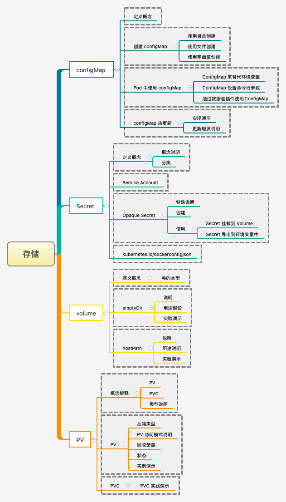
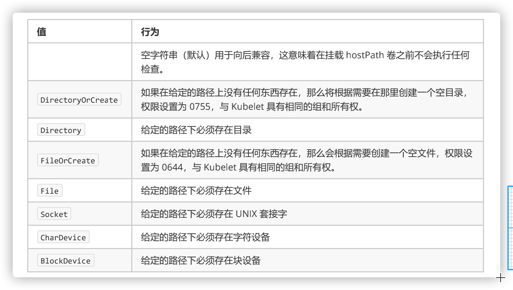
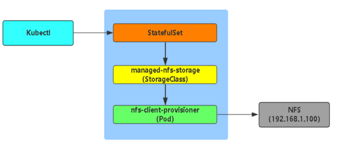
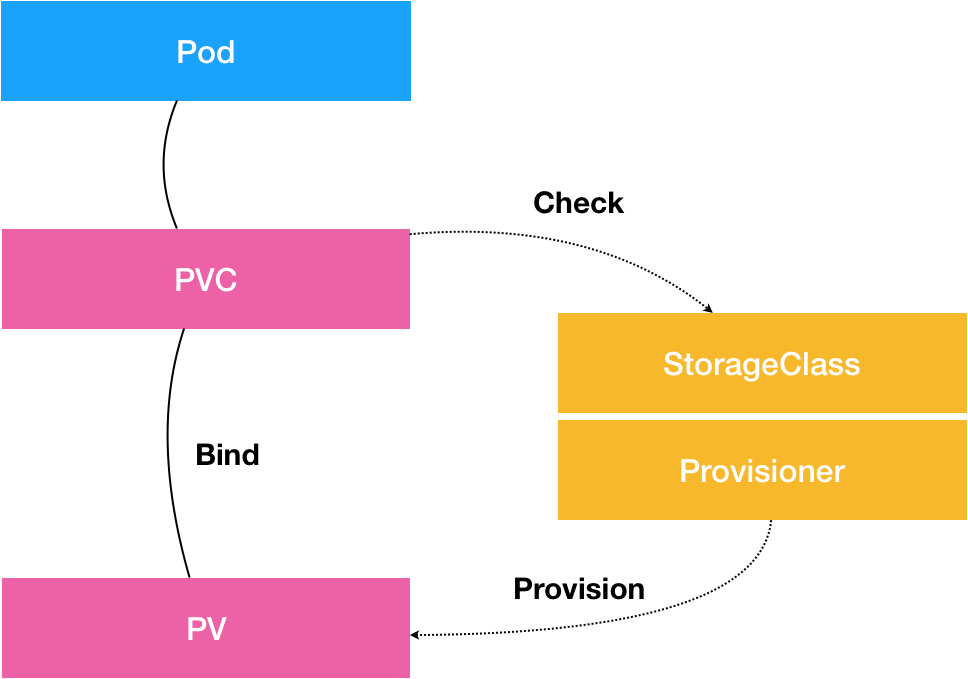
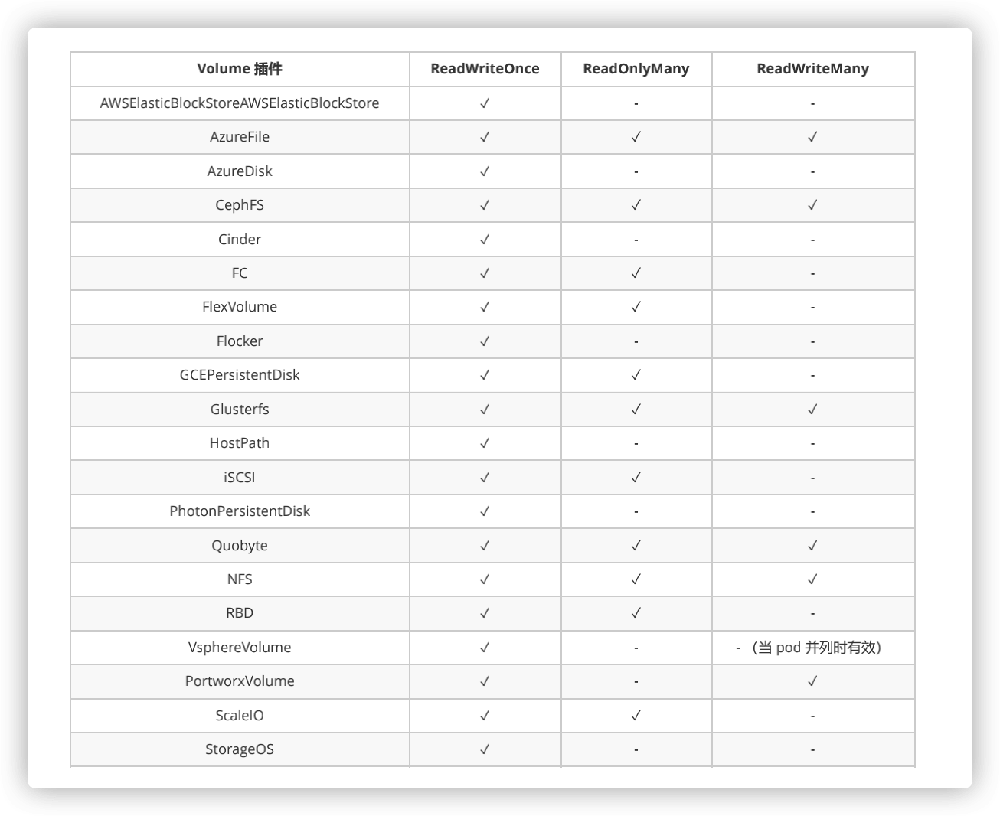
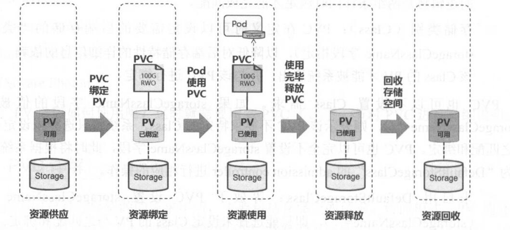
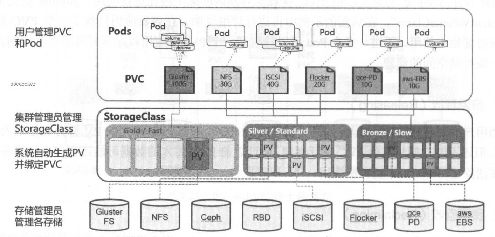
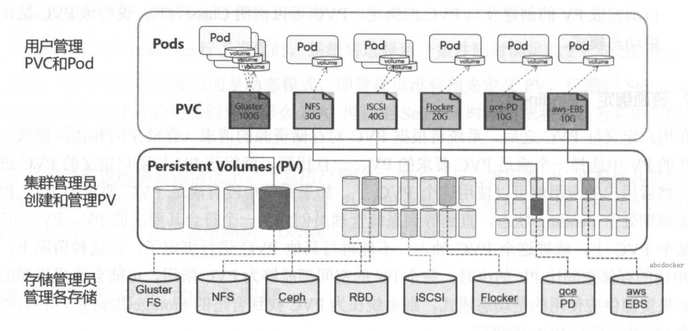

我们一起学习 Kubernetes 的存储吧！
在之前的博文中，我们已经知道了很多 K8S 中的组件了，包括资源控制器等。在资源控制器中，我们说到了 StatefulSet 这个控制器组件，其专门为了有状态服务而生的，而对应的存储要存放到哪里呢？
1. 存储机制
介绍 K8S 中常见的存储机制可以让我们所使用的！

2. ConfigMap
介绍 K8S 中常见的 ConfigMap 存储机制！
ConfigMap 功能在 Kubernetes1.2 版本中引入，许多应用程序会从配置文件、命令行参数或环境变量中读取配置信息。ConfigMap API 给我们提供了向容器中注入配置信息的机制，ConfigMap 可以被用来保存单个属性，也可以用来保存整个配置文件或者 JSON 二进制大对象
2.1 ConfigMap 的创建
- [1] 使用目录创建
--from-file 指定在目录下的所有文件都会被用在 ConfigMap 里面创建一个键值对，键的名字就是文件名，值就是文件的内容。
$ ls docs/user-guide/config-map/kubectl/
game.properties
ui.properties
# game.properties
$ cat docs/user-guide/config-map/kubectl/game.properties
enemies=aliens
lives= 3
enemies.cheat=true
enemies.cheat.level=noGoodRotten
secret.code.passphrase=UUDDLRLRBABAS
secret.code.allowed=true
secret.code.lives= 30
# ui.properties
$ cat docs/user-guide/config-map/kubectl/ui.properties
color.good=purple
color.bad=yellow
allow.textmode=true
how.nice.to.look=fairlyNice
# 创建名称为game-config的ConfigMap配置
$ kubectl create configmap game-config \
--from-file=docs/user-guide/config-map/kubectl
# 查看存储的ConfigMap列表
$ kubectl get configmap
NAME DATA AGE
game-config 2 22s
# 查看对应内容
$ kubectl describe configmap game-config
$ kubectl get configmap game-config -o yaml
- [2] 使用文件创建
只要指定为一个文件就可以从单个文件中创建 ConfigMap。--from-file 这个参数可以使用多次，你可以使用两次分别指定上个实例中的那两个配置文件，效果就跟指定整个目录是一样的。
# 创建名称为game-config-2的ConfigMap配置
$ kubectl create configmap game-config-2 \
--from-file=docs/user-guide/config-map/kubectl/game.properties
# 查看存储的ConfigMap列表
$ kubectl get configmap
NAME DATA AGE
game-config 2 34s
game-config-2 1 2s
# 查看对应内容
$ kubectl describe configmap game-config-2
$ kubectl get configmap game-config-2 -o yaml
- [3] 使用字面值创建
使用文字值创建，利用 --from-literal 参数传递配置信息，该参数可以使用多次，格式如下。
# 创建名称为special-config的ConfigMap配置
$ kubectl create configmap special-config \
--from-literal=special.how=very \
--from-literal=special.type=charm
# 查看对应内容
$ kubectl get configmaps special-config -o yaml
2.2 ConfigMap 的使用
- [1] 使用 ConfigMap 来替代环境变量
apiVersion: v1
kind: ConfigMap
metadata:
name: special-config
namespace: default
data:
special.how: very
special.type: charm
apiVersion: v1
kind: ConfigMap
metadata:
name: env-config
namespace: default
data:
log_level: INFO
apiVersion: v1
kind: Pod
metadata:
name: myapp-test-pod
spec:
restartPolicy: Never
containers:
- name: test-container
image: hub.escape.com/library/myapp:v1
command: ["/bin/sh", "-c", "env"]
env:
- name: SPECIAL_LEVEL_KEY
valueFrom:
configMapKeyRef:
name: special-config
key: special.how
- name: SPECIAL_TYPE_KEY
valueFrom:
configMapKeyRef:
name: special-config
key: special.type
envFrom:
- configMapRef:
name: env-config
- [2] 用 ConfigMap 设置命令行参数
apiVersion: v1
kind: ConfigMap
metadata:
name: special-config
namespace: default
data:
special.how: very
special.type: charm
apiVersion: v1
kind: Pod
metadata:
name: myapp-test-pod
spec:
restartPolicy: Never
containers:
- name: test-container
image: hub.escape.com/library/myapp:v1
command: ["/bin/sh", "-c", "echo $(SPECIAL_LEVEL_KEY) $(SPECIAL_TYPE_KEY)"]
env:
- name: SPECIAL_LEVEL_KEY
valueFrom:
configMapKeyRef:
name: special-config
key: special.how
- name: SPECIAL_TYPE_KEY
valueFrom:
configMapKeyRef:
name: special-config
key: special.type
- [3] 通过数据卷插件使用 ConfigMap
在数据卷里面使用这个 ConfigMap，有不同的选项。最基本的就是将文件填入数据卷，在这个文件中，键就是文件名，键值就是文件内容。
apiVersion: v1
kind: ConfigMap
metadata:
name: special-config
namespace: default
data:
special.how: very
special.type: charm
apiVersion: v1
kind: Pod
metadata:
name: myapp-test-pod
spec:
restartPolicy: Never
containers:
- name: test-container
image: hub.escape.com/library/myapp:v1
command: ["/bin/sh", "-c", "cat /etc/config/special.how"]
volumeMounts:
- name: config-volume
mountPath: /etc/config
volumes:
- name: config-volume
configMap:
name: special-config
2.3 ConfigMap 热更新
- 正常情况下，我们可以通过如下配置，在启动的
Pod容器里面获取到ConfigMap中配置的信息。
apiVersion: v1
kind: ConfigMap
metadata:
name: log-config
namespace: default
data:
log_level: INFO
---
apiVersion: extensions/v1beta
kind: Deployment
metadata:
name: my-nginx
spec:
replicas: 1
template:
metadata:
labels:
run: my-nginx
spec:
containers:
- name: my-nginx
image: hub.escape.com/library/myapp:v1
ports:
- containerPort: 80
volumeMounts:
- name: config-volume
mountPath: /etc/config
volumes:
- name: config-volume
configMap:
name: log-config
# 查找对应信息
$ kubectl exec \
`kubectl get pods -l run=my-nginx -o=name | cut -d "/" -f2` \
cat /etc/config/log_level
INFO
- 修改
ConfigMap配置，修改log_level的值为DEBUG等待大概10秒钟时间，再次查看环境变量的值。
# 修改ConfigMap配置
$ kubectl edit configmap log-config
# 查找对应信息
$ kubectl exec \
`kubectl get pods -l run=my-nginx -o=name|cut -d "/" -f2` \
cat /etc/config/log_level
DEBUG
ConfigMap更新后滚动更新Pod，更新ConfigMap目前并不会触发相关Pod的滚动更新，可以通过修改pod annotations的方式强制触发滚动更新。这个例子里我们在.spec.template.metadata.annotations中添加version/config，每次通过修改version/config来触发滚动更新。
$ kubectl patch deployment my-nginx \
--patch '{"spec": {"template": {"metadata": {"annotations": \
{"version/config": "20190411" }}}}}'
- 更新
ConfigMap后：- 使用该
ConfigMap挂载的Env不会同步更新 - 使用该
ConfigMap挂载的Volume中的数据需要一段时间（实测大概10秒）才能同步更新
- 使用该
3. Secret
介绍 K8S 中常见的 Secret 存储机制！
Secret 解决了密码、token、密钥等敏感数据的配置问题，而不需要把这些敏感数据暴露到镜像或者 Pod Spec 中。Secret 可以以 Volume 或者环境变量的方式使用。Secret 有三种类型，分别是：
- Service Account
- 用来访问
Kubernetes API，由Kubernetes自动创建，并且会自动挂载到Pod的特点目录中。
- 用来访问
- Opaque
base64编码格式的Secret，用来存储密码、密钥等，相当来说不安全。
- kubernetes.io/dockerconfigjson
- 用来存储私有
docker registry的认证信息。
- 用来存储私有
3.1 Service Account
Service Account 是用来访问 Kubernetes API 接口的，由 Kubernetes 自动创建和管理的，并且会自动挂载到 Pod 的 /run/secrets/kubernetes.io/serviceaccount 目录中。
$ kubectl get pods -n kube-system
NAME READY STATUS RESTARTS AGE
kube-proxy-md1u2 1/1 Running 0 13d
$ kubectl exec kube-proxy-md1u2 -- \
ls /run/secrets/kubernetes.io/serviceaccount
ca.crt
namespace
token
3.2 Opaque
- [1] 创建说明
Opaque 类型的数据是一个 map 类型，要求 value 是 base64 编码格式。
$ echo -n "admin" | base
YWRtaW4=
$ echo -n "1f2d1e2e67df" | base
MWYyZDFlMmU2N2Rm
apiVersion: v1
kind: Secret
metadata:
name: mysecret
type: Opaque
data:
password: MWYyZDFlMmU2N2Rm
username: YWRtaW4=
- [2] 使用方式 —— 将
Secret挂载到Volume中
apiVersion: v1
kind: Pod
metadata:
labels:
name: seret-test
spec:
containers:
- name: db
image: hub.escape.com/library/myapp:v1
volumeMounts:
- name: secrets
mountPath: "readOnly: true"
volumes:
- name: secrets
secret:
secretName: mysecret
- [3] 使用方式 —— 将
Secret导出到环境变量中
apiVersion: extensions/v1beta
kind: Deployment
metadata:
name: pod-deployment
spec:
replicas: 2
template:
metadata:
labels:
app: pod-deployment
spec:
containers:
- name: pod-1
image: hub.escape.com/library/myapp:v1
ports:
- containerPort: 80
env:
- name: TEST_USER
valueFrom:
secretKeyRef:
name: mysecret
key: username
- name: TEST_PASSWORD
valueFrom:
secretKeyRef:
name: mysecret
key: password
volumes:
- name: config-volume
configMap:
name: mysecret
3.3 dockerconfigjson
- 使用
Kuberctl创建docker registry认证的secret。
# 创建格式
$ kubectl create secret docker-registry myregistrykey \
--docker-server=DOCKER_REGISTRY_SERVER \
--docker-username=DOCKER_USER \
--docker-password=DOCKER_PASSWORD \
--docker-email=DOCKER_EMAIL
# 示例演示
$ kubectl create secret docker-registry myregistrykey \
--docker-server=hub.escape.com \
--docker-username=admin \
--docker-password=harbor123456 \
--docker-email=harbor@escape.com
- 在创建
Pod的时候，通过imagePullSecrets来引用刚创建的myregistrykey。
apiVersion: v1
kind: Pod
metadata:
name: registry-test
spec:
containers:
- name: registry-test
image: hub.escape.com/library/myapp:v1
imagePullSecrets:
name: myregistrykey
4. Volume
介绍 K8S 中常见的 Volume 存储机制！
容器磁盘上的文件的生命周期是短暂的，这就使得在容器中运行重要应用时会出现一些问题。首先，当容器崩溃时，kubelet 会重启它，但是容器中的文件将丢失——容器以干净的状态（镜像最初的状态）重新启动。其次，在 Pod 中同时运行多个容器时，这些容器之间通常需要共享文件。Kubernetes 中的 Volume 抽象就很好的解决了这些问题。
Kubernetes 中的卷有明确的寿命 —— 与封装它的 Pod 相同。所以，卷的生命比 Pod 中的所有容器都长，当这个容器重启时数据仍然得以保存。当然，当 Pod 不再存在时，卷也将不复存在。也许更重要的是，Kubernetes 支持多种类型的卷，Pod 可以同时使用任意数量的卷。
- Kubernetes 支持以下类型的卷
nfs、emptyDir、localawsElasticBlockStore、azureDisk、azureFilecephfs、csi、downwardAPI、fc、flocker、scaleIOgcePersistentDisk、gitRepo、glusterfs、hostPath、iscsipersistentVolumeClaim、projected、portworxVolumequobyte、rbd、secret、storageos、vsphereVolume
4.1 emptyDir
hostPath 为静态存储机制 - 同一 Pod 内的不同容器之间共享工作过程
EmptyDir 是一个空目录，他的生命周期和所属的 Pod 是完全一致的，它用处是把同一 Pod 内的不同容器之间共享工作过程产生的文件。当 Pod 被分配给节点时，首先创建 emptyDir 卷，并且只要该 Pod 在该节点上运行，该卷就会存在。正如卷的名字所述，它最初是空的。
Pod 中的容器可以读取和写入 emptyDir 卷中的相同文件，尽管该卷可以挂载到每个容器中的相同或不同路径上。当出于任何原因从节点中删除 Pod 时，emptyDir 中的数据将被永久删除。emptyDir 的用法有：
- 暂存空间，例如用于基于磁盘的合并排序
- 用作长时间计算崩溃恢复时的检查点
Web服务器容器提供数据时，保存内容管理器容器提取的文件
apiVersion: v1
kind: Pod
metadata:
name: pod-demo
namespace: default
labels:
app: myapp
tier: frontend
annotations:
youmen.com/created-by: "youmen admin"
spec:
containers:
- name: myapp
image: ikubernetes/myapp:v1
imagePullPolicy: IfNotPresent
ports:
- name: http
containerPort: 80
volumeMounts:
- name: html
mountPath: /usr/share/nginx/html/
- name: busybox
image: busybox:latest
imagePullPolicy: IfNotPresent
volumeMounts:
- name: html
mountPath: /data/
command: ["/bin/sh", "-c"]
args:
- "while true; do echo $(date) >> /data/index.html; sleep 3; done"
volumes:
- name: html
emptyDir: {}
$ kubectl apply -f pod_volume.demo1.yaml
curl 10.244.3.34 -s
Tue Dec 24 15:37:09 UTC 2020
Tue Dec 24 15:37:12 UTC 2020
Tue Dec 24 15:37:15 UTC 2020
Tue Dec 24 15:37:18 UTC 2020
Tue Dec 24 15:37:21 UTC 2020
Tue Dec 24 15:37:24 UTC 2020
4.2 hostPath
hostPath 为静态存储机制 - 主机目录挂载
hostPath 卷将主机节点的文件系统中的文件或目录挂载到集群中，hostPath 的用途如下所示：
- 运行需要访问
Docker内部的容器- 使用
/var/lib/docker的hostPath
- 使用
- 在容器中运行
cAdvisor监控服务- 使用
/dev/cgroups的hostPath
- 使用
- 允许
pod指定给定的hostPath- 是否应该在
pod运行之前存在，是否应该创建，以及它应该以什么形式存在
- 是否应该在
除了所需的 path 属性之外，用户还可以为 hostPath 卷指定 type。使用这种卷类型是请注意，因为：
- 由于每个节点上的文件都不同，具有相同配置（例如从
podTemplate创建的）的pod在不同节点上的行为可能会有所不同。 - 当
Kubernetes按照计划添加资源感知调度时，将无法考虑hostPath使用的资源。 - 在底层主机上创建的文件或目录只能由
root写入。您需要在特权容器中以root身份运行进程，或修改主机上的文件权限以便写入hostPath卷。

apiVersion: v1
kind: Pod
metadata:
name: test-pd
spec:
containers:
- name: test-container
image: k8s.gcr.io/test-webserver
volumeMounts:
- mountPath: /test-pd
name: test-volume
volumes:
- name: test-volume
hostPath:
path: /data
type: Directory
4.3 nfs
使用 nfs-client-provisioner 插件来动态创建 pv
nfs-client-provisioner 是一个 Kubernetes 的简易 NFS 的外部 provisioner，本身不提供 NFS，需要现有的 NFS 服务器提供存储。
- 动态
PV又叫做动态供给，就是在创建PVC以后，自动创建出PV PV以${namespace}-${pvcName}-${pvName}的命名格式提供（在NFS服务器上）PV回收的时候以archieved-${namespace}-${pvcName}-${pvName}的命名格式（在NFS服务器上）

在 kubernetes 中要实现动态创建 pv 必须先要创建 StorageClass，每一个 StorageClass 对应了一个 provisioner。在 kubernetes 中内置了很多 provisioner 类型可供选择，但是很难受的是没有内置的 nfs 的 provisioner。对普通用户而言，部署 nfs 是实现后端存储最简单直接的方法。虽然 k8s 并不提供，但其允许提供外部的 provisioner，而对应迫切需要使用 nfs 的用户，可以使用 nfs-client-provisioner 这个插件完成。
- 获取 NFS 的配置代码
# 克隆项目
$ git clone https://github.com/kubernetes-retired/external-storage.git
# 进入对应目录
$ cd nfs-client/deploy/
# 文件列表如下所示
$ ls -lh
-rw-r--r-- 1 root root 225 Jan 22 14:26 class.yaml
-rw-r--r-- 1 root root 1030 Jan 22 13:17 deployment-arm.yaml
-rw-r--r-- 1 root root 1040 Jan 22 13:30 deployment.yaml
drwxr-xr-x 2 root root 214 Jan 22 13:32 objects
-rw-r--r-- 1 root root 1834 Jan 22 13:19 rbac.yaml
-rw-r--r-- 1 root root 241 Jan 22 13:55 test-claim.yaml
-rw-r--r-- 1 root root 399 Jan 22 13:38 test-pod.yaml
- 在 K8S 中配置 NFS 插件
- 创建一个独立
nfs-namespace.yaml的命名空间 - 修改
nfs-deployment.yaml的namespace为你创建的namespace - 修改
nfs-rbac.yaml的namespace为你创建的namespace
- 创建一个独立
# nfs-namespace.yaml
# kubectl apply -f nfs-namespace.yaml
apiVersion: v1
kind: Namespace
metadata:
name: nfs-client
# nfs-deployment.yaml
# kubectl apply -f nfs-deployment.yaml
apiVersion: apps/v1
kind: Deployment
metadata:
namespace: nfs-client
name: nfs-client-provisioner
labels:
app: nfs-client-provisioner
spec:
replicas: 1
strategy:
type: Recreate
selector:
matchLabels:
app: nfs-client-provisioner
template:
metadata:
labels:
app: nfs-client-provisioner
spec:
serviceAccountName: nfs-client-provisioner
containers:
- name: nfs-client-provisioner
image: quay.io/external_storage/nfs-client-provisioner:latest
volumeMounts:
- name: nfs-client-root
mountPath: /persistentvolumes
env:
- name: PROVISIONER_NAME
value: fuseim.pri/ifs
- name: NFS_SERVER
value: 192.168.30.40
- name: NFS_PATH
value: /ifs/kubernetes
volumes:
- name: nfs-client-root
nfs:
server: 192.168.30.40
path: /ifs/kubernetes
# nfs-rbac.yaml
# kubectl apply -f nfs-rbac.yaml
apiVersion: v1
kind: ServiceAccount
metadata:
name: nfs-client-provisioner
namespace: nfs-client
---
kind: ClusterRole
apiVersion: rbac.authorization.k8s.io/v1
metadata:
name: nfs-client-provisioner-runner
rules:
- apiGroups: [""]
resources: ["persistentvolumes"]
verbs: ["get", "list", "watch", "create", "delete"]
- apiGroups: [""]
resources: ["persistentvolumeclaims"]
verbs: ["get", "list", "watch", "update"]
- apiGroups: ["storage.k8s.io"]
resources: ["storageclasses"]
verbs: ["get", "list", "watch"]
- apiGroups: [""]
resources: ["events"]
verbs: ["create", "update", "patch"]
---
kind: ClusterRoleBinding
apiVersion: rbac.authorization.k8s.io/v1
metadata:
name: run-nfs-client-provisioner
subjects:
- kind: ServiceAccount
name: nfs-client-provisioner
namespace: nfs-client
roleRef:
kind: ClusterRole
name: nfs-client-provisioner-runner
apiGroup: rbac.authorization.k8s.io
---
kind: Role
apiVersion: rbac.authorization.k8s.io/v1
metadata:
name: leader-locking-nfs-client-provisioner
namespace: nfs-client
rules:
- apiGroups: [""]
resources: ["endpoints"]
verbs: ["get", "list", "watch", "create", "update", "patch"]
---
kind: RoleBinding
apiVersion: rbac.authorization.k8s.io/v1
metadata:
name: leader-locking-nfs-client-provisioner
namespace: nfs-client
subjects:
- kind: ServiceAccount
name: nfs-client-provisioner
namespace: nfs-client
roleRef:
kind: Role
name: leader-locking-nfs-client-provisioner
apiGroup: rbac.authorization.k8s.io
- 创建完成之后再来创建 StorageClass
provisioner就是刚才deployment中的PROVISIONER_NAME- 还有一个比较关键的参数是
archiveOnDelete，如果你想在删除了pvc之后还保留数据的话需要把这个参数改为true，不然你删除了pvc同时pv也会删除，然后数据也会丢失。
# nfs-class.yaml
# kubectl apply -f nfs-class.yaml
# kubectl get storageclass
apiVersion: storage.k8s.io/v1
kind: StorageClass
metadata:
name: managed-nfs-storage
provisioner: fuseim.pri/ifs
parameters:
archiveOnDelete: "false"
- 测试是否正常
- 官方仓库提供了对应的测试配置文件，我们只需要执行即可
- 只要有了
pvc，那么就会动态创建pv - 测试创建
PVC，测试创建POD - 删除测试
PVC，删除测试POD
# 查看创建的nfs容器
$ kubectl get pods
NAME READY STATUS RESTARTS AGE
nfs-client-provisioner-565b4456f6-v9b97 1/1 Running 0 67s
# test-claim.yaml
kind: PersistentVolumeClaim
apiVersion: v1
metadata:
name: test-claim
annotations:
volume.beta.kubernetes.io/storage-class: "managed-nfs-storage"
spec:
accessModes:
- ReadWriteMany
resources:
requests:
storage: 1Mi
# test-pod.yaml
kind: Pod
apiVersion: v1
metadata:
name: test-pod
spec:
containers:
- name: test-pod
image: gcr.io/google_containers/busybox:1.24
command:
- "/bin/sh"
args:
- "-c"
- "touch /mnt/SUCCESS && exit 0 || exit 1"
volumeMounts:
- name: nfs-pvc
mountPath: "/mnt"
restartPolicy: "Never"
volumes:
- name: nfs-pvc
persistentVolumeClaim:
claimName: test-claim
# 测试效果(并非上述服务效果)
# 用于StatefulSet服务使用: nfs服务器会自动创建pv数据
# https://www.cnblogs.com/xiangsikai/p/11424245.html
# 查看Pod数量
$ kubectl get pods
NAME READY STATUS RESTARTS AGE
nginx-statefulset-0 1/1 Running 0 3m21s
nginx-statefulset-1 1/1 Running 0 3m16s
nginx-statefulset-2 1/1 Running 0 3m11s
# 查看动态pv，pvc存储
$ kubectl get pv, pvc
# nfs服务器会自动创建pv数据
default-www-nginx-statefulset-0-pvc-8063e4f9-c8a1-11e9-8b0e-000c29400317
default-www-nginx-statefulset-1-pvc-836c1466-c8a1-11e9-8b0e-000c29400317
default-www-nginx-statefulset-2-pvc-868a4a51-c8a1-11e9-8b0e-000c29400317
5. PersistentVolume
介绍 K8S 中常见的 PersistentVolume 存储机制！
虽然 pod 也可以直接挂载存储，但是管理不方便，特别是 pod 的数量越来越多。而且 pod 可能是由开发维护的，而存储却是由运维负责。通过 PV、PVC 分开就方便多了。
- PersistentVolume（PV）
是由管理员设置的存储，它是群集的一部分，用于描述一个具体的 Volume 属性，比如 Volume 的类型、挂载目录、远程存储服务器地址等。就像节点是集群中的资源一样，PV 也是集群中的资源。PV 是 Volume 之类的卷插件，但具有独立于使用 PV 的 Pod 的生命周期。此 API 对象包含存储实现的细节，即 NFS、iSCSI 或特定于云供应商的存储系统。
- PersistentVolumeClaim（PVC）
是用户存储的请求，用于描述 Pod 想要使用的持久化属性，比如存储大小、读写权限等。它与 Pod 相似。Pod 消耗节点资源，PVC 消耗 PV 资源。Pod 可以请求特定级别的资源（CPU 和内存）。声明可以请求特定的大小和访问模式（例如，可以以读/写一次或只读多次模式挂载）。
- StorageClass（SC）
充当 PV 的模板，自动为 PVC 创建 PV。

5.1 基本概念
- [1] 静态 PV
集群管理员创建一些 PV。它们带有可供群集用户使用的实际存储的细节。它们存在于 Kubernetes API 中，可用于消费。
# 静态的配置方式 - 一个连接NFS的PV
apiVersion: v1
kind: PersistentVolume
metadata:
name: pv0003
spec:
capacity:
storage: 5Gi
volumeMode: Filesystem
accessModes:
- ReadOnlyMany
persistentVolumeReclaimPolicy: Recycle
storageClassName: slow
mountOptions:
- noatime
- _netdev
nfs:
path: /data/nfs
server: 172.100.102.66
- [2] 动态 PV
- StorageClass: 指定一些 PV 的回收策略以及挂载选项
- 最主要的是指定
Provisioner
- 最主要的是指定
- Provisioner: 用来动态创建和管理 PV 的插件
- 每个存储都有不同的插件来管理
PV，不同存储指定PV参数和是从存储里清除数据的方式都是不一样的
- 每个存储都有不同的插件来管理
- Kubernetes 内置了一些存储的 Provisioner，而一些没有内置的
- 不支持的常用的有:
NFS、CerphFS，则需要引入外部的Provisioner来完成
- 不支持的常用的有:
- 外部仓库地址
- 关于 PVC 的扩容
- 只有动态供应的
pvc可以调整大小，供应pvc的存储类必须支持调整大小，即手动创建不支持 kubernetes中用NFS做后端存储支不支持PVC扩容- 目前支持
resize的存储卷Azure Disk,Azure File,Glusterfs,Ceph RBD等 - kubernetes PVC 支持 resize 扩容
- 只有动态供应的
- StorageClass: 指定一些 PV 的回收策略以及挂载选项
**动态 PV 又叫做动态供给，就是在创建 PVC 以后，自动创建出 PV**。当管理员创建的静态 PV 都不匹配用户的 PersistentVolumeClaim 时，集群可能会尝试动态地为 PVC 创建卷。此配置基于 StorageClasses: PVC 必须请求存储类，并且管理员必须创建并配置该类才能进行动态创建。声明该类为 "" 可以有效地禁用其动态配置。
要启用基于存储级别的动态存储配置，集群管理员需要启用 API server 上的 DefaultStorageClass 准入控制器。例如，通过确保 DefaultStorageClass 位于 API server 组件的 --admission-control 标志，使用逗号分隔的有序值列表中，可以完成此操作。
apiVersion: storage.k8s.io/v1
kind: StorageClass
metadata:
name: nfs-client-storageclass
provisioner: rookieops/nfs
allowVolumeExpansion: true
- [3] 绑定
master 中的控制环路监视新的 PVC，寻找匹配的 PV（如果可能），并将它们绑定在一起。如果为新的 PVC 动态调配 PV，则该环路将始终将该 PV 绑定到 PVC。否则，用户总会得到他们所请求的存储，但是容量可能超出要求的数量。一旦 PV 和 PVC 绑定后，PersistentVolumeClaim 绑定是排他性的，不管它们是如何绑定的。PVC 跟 PV 绑定是一对一的映射。
5.2 持久化卷
- [1] 持久化卷声明的保护
PVC 保护的目的是确保由 pod 正在使用的 PVC 不会从系统中移除，因为如果被移除的话可能会导致数据丢失。当启用 PVC 保护 alpha 功能时，如果用户删除了一个 pod 正在使用的 PVC，则该 PVC 不会被立即删除。PVC 的删除将被推迟，直到 PVC 不再被任何 pod 使用。
- [2] 持久化卷类型
GCEPersistentDisk、AWSElasticBlockStore、AzureFile、AzureDiskFlexVolume、Flocker、NFS、iSCSI、RBD、CephFSCinder、Glusterfs、VsphereVolume、Quobyte、FCHostPath、VMware、Photon、StorageOS
apiVersion: v1
kind: PersistentVolume
metadata:
name: pv
spec:
persistentVolumeReclaimPolicy: Recycle
storageClassName: slow
volumeMode: Filesystem
accessModes:
- ReadWriteOnce
mountOptions:
- hard
- nfsvers=4.
capacity:
storage: 5Gi
nfs:
path: /tmp
server: 172.17.0.2
- [3] PV 访问模式
PersistentVolume 可以以资源提供者支持的任何方式挂载到主机上。如下表所示，供应商具有不同的功能，每个 PV 的访问模式都将被设置为该卷支持的特定模式。例如，NFS 可以支持多个读/写客户端，但特定的 NFS PV 可能以只读方式导出到服务器上。每个 PV 都有一套自己的用来描述特定功能的访问模式。
- ReadWriteOnce
- 该卷可以被单个节点以读/写模式挂载
- 在命令行中访问模式缩写为：
RWO
- ReadOnlyMany
- 该卷可以被多个节点以只读模式挂载
- 在命令行中访问模式缩写为：
ROX
- ReadWriteMany
- 该卷可以被多个节点以读/写模式挂载
- 在命令行中访问模式缩写为：
RWX

- [4] 回收策略
Retain（保留）—— 手动回收
Recycle（回收）—— 基本擦除
Delete（删除）—— 关联的存储资产将被删除
- [5] 状态
卷可以处于以下的某种状态(命令行会显示绑定到 PV 的 PVC 的名称)：
Available（可用）—— 块空闲资源还没有被任何声明绑定
Bound（已绑定）—— 卷已经被声明绑定
Released（已释放）—— 声明被删除但是资源还未被集群重新声明
Failed（失败）—— 该卷的自动回收失败
5.3 实例演示
演示 NFS 模式下的持久化方案！
- [1] 安装 NFS 服务器端服务
# 安装相关工具
$ yum install -y nfs-common nfs-utils rpcbind
# 创建共享目录
$ mkdir /nfs-data
$ chmod -R 666 /nfs-data
$ chown -R nfs-data /nfs-data
# 配置挂载
$ cat /etc/exports
/nfs-data *(rw,no_root_squash,no_all_squash,sync)
# 重启服务生效
$ systemctl start rpcbind
$ systemctl start nfs
- [2] 安装 NFS 客户端服务
# 安装客户端工具
$ yum install -y nfs-common nfs-utils rpcbind
# 查看服务端挂载地址
$ showmount -e 192.168.66.100
/nfs-data *
# 尝试客户端手动挂载
$ mkdir -pv /test
$ mount -t -nfs 192.168.66.100:/nfs-data /test/
- [3] 部署 PV
apiVersion: v1
kind: PersistentVolume
metadata:
name: nfspv1
spec:
persistentVolumeReclaimPolicy: Retain
# 我们可以给PV起名字；比如高速/低速等
storageClassName: nfs-fast
accessModes:
- ReadWriteOnce
capacity:
storage: 10Gi
nfs:
path: /nfs-data
server: 192.168.66.100
# 查看当前可用PV(我们这里多创建几个)
$ kubectl get pv -n default
NAME CAPACITY ACCESS MODES RECLAIM POLICY STATUS CLAIM STORAGECLASS REASON AGE
nfspv1 10Gi RWO Retain Available nfs-fast 3m
nfspv2 5Gi RWO Retain Available nfs-fast 4m
nfspv3 5Gi RWO Retain Available nfs-slow 5m
nfspv4 1Gi ROX Retain Available nfs-fast 6m
- [4] 创建服务并使用 PVC
通过如下配置文件，我们创建了三个 Nginx 的副本。但是，观察发现只有一个 web-0 的 POD 绑定到了属于自己的 PV 数据存储，而 web-2 显示没有符合自己要求的 PV，而后续的 POD 压根都没有开始创建。
apiVersion: v1
kind: Service
metadata:
name: nginx
labels:
app: nginx
spec:
clusterIP: None
selector:
app: nginx
ports:
- name: web
port: 80
---
apiVersion: apps/v1
kind: StatefulSet
metadata:
name: web
spec:
replicas: 3
selector:
matchLabels:
app: nginx
serviceName: "nginx"
template:
metadata:
labels:
app: nginx
spec:
containers:
- name: nginx
image: k8s.gcr.io/nginx-slim:0.1
ports:
- name: web
containerPort: 80
volumeMounts:
- name: www
mountPath: /usr/share/nginx/html
volumeClaimTemplates:
- metadata:
name: www
spec:
accessModes: ["ReadWriteOnce"]
storageClassName: "nfs-fast"
resources:
requests:
storage: 1Gi
# 查看当前可用PV(我们这里多创建几个)
$ kubectl get pv -n default
NAME CAPACITY ACCESS MODES RECLAIM POLICY STATUS CLAIM STORAGECLASS REASON AGE
nfspv1 10Gi RWO Retain Bound default/www-web-0 nfs-fast 3m
nfspv2 5Gi RWO Retain Available nfs-fast 4m
nfspv3 5Gi RWO Retain Available nfs-slow 5m
nfspv4 1Gi ROX Retain Available nfs-fast 6m
5.4 使用方式
PV 可以看作可用的存储资源，PVC 则是对存储资源的需求，PV 和 PVC 的互相关系遵循如下图！
由于容器本身是非持久化的，因此需要解决在容器中运行应用程序遇到的一些问题。首先，当容器崩溃时，kubelet 将重新启动容器，但是写入容器的文件将会丢失，容器将会以镜像的初始状态重新开始；第二，在通过一个 Pod 中一起运行的容器，通常需要共享容器之间一些文件。Kubernetes 通过存储卷解决上述的两个问题。
在 Docker 有存储卷的概念卷，但 Docker 中存储卷只是磁盘的或另一个容器中的目录，并没有对其生命周期进行管理。Kubernetes 的存储卷有自己的生命周期，它的生命周期与使用的它 Pod 生命周期一致。因此，相比于在 Pod 中运行的容器来说，存储卷的存在时间会比的其中的任何容器都长，并且在容器重新启动时会保留数据。当然，当 Pod 停止存在时，存储卷也将不再存在。在 Kubernetes 支持多种类型的卷，而 Pod 可以同时使用各种类型和任意数量的存储卷。

[1] 资源供应：Kubernetes 支持两种资源的供应模式：静态模式(Staic)和动态模式(Dynamic)。
- 静态模式
- 运维管理人员手动创建多个
PV，每个PV在定义的时需要将后端存储的特性进行设置，然后让PVC进行选择。 - 静态资源下，通过
PV和PVC完成绑定，并供Pod使用的存储管理机制。
- 运维管理人员手动创建多个

- 动态模式
- 运维管理人员无需手动创建
PV，而是通过StorageClass的设置对后端存储进行描述，标记为某种”类型(Class)”，此时要求PVC对存储的类型进行声明，系统将自动完成PV的创建及PVC的绑定，PVC可以声明为Class为""，说明该PVC禁止使用动态模式。 - 动态资源下，通过
StorageClass和PVC完成资源动态绑定，系统自动生成PV，并供Pod使用的存储管理机制。
- 运维管理人员无需手动创建

[2] 资源绑定：在用户定义好 PVC 后，系统将根据 PVC 对存储资源的请求(存储空间和访问模式)在已存在的 PV 中选择一个满足 PVC 要求的 PV，一旦找到，就将 PV 与用户定义的 PVC 进行绑定，然后用户的应用就可以使用这个 PVC 了。如果系统中没有满足 PVC 要求的 PV，PVC 则会无限期处于 Pending 状态，直到等到系统管理员创建了一个符合要求的 PV。PV 一旦绑定在某个 PVC 上，就被这个 PVC 独占，不能再与其他 PVC 进行绑定了。在这种情况下，当 PVC 申请的存储空间比 PV 的少时，整个 PV 的空间都能够为 PVC 所用，可能会造成资源的浪费。如果资源供应使用的是动态模式，则系统在 PVC 找到合适的 StorageClass 后，将会自动创建 PV 并完成 PVC 的绑定。
# 根据Labels匹配PV与PVC
#也可以根据storageClassName类型进行匹配
# PV
apiVersion: v1
kind: PersistentVolume
metadata:
name: pv2
labels: # 这里将PV设置一个labels
app: nfs
spec:
capacity:
storage: 1Gi
accessModes:
- ReadWriteOnce
persistentVolumeReclaimPolicy: Recycle
nfs:
path: /data/volumes
server: nfs1
# PVC
apiVersion: v1
kind: PersistentVolumeClaim
metadata:
name: pvc-nfs
spec:
accessModes:
- ReadWriteOnce
resources:
requests:
storage: 1Gi
selector: # PVC匹配标签为app=nfs的PV
matchLabels:
app: nfs
# Deployment
apiVersion: apps/v1
kind: Deployment
metadata:
name: pv-nfs-nginx
spec:
replicas: 3
selector:
matchLabels:
app: pv-nfs-nginx
template:
metadata:
labels:
app: pv-nfs-nginx
spec:
containers:
- name: pv-nfs-nginx
image: nginx
ports:
- containerPort: 80
volumeMounts: # 挂载，首先添加需要挂载的目录
- name: pv-nginx # 挂载点的名称
mountPath: /usr/share/nginx/html # 挂载点的路径
volumes: # 绑定
- name: pv-nginx
persistentVolumeClaim: # 将镜像中的nginx目录挂载到下面名称的PVC中
claimName: pvc-nfs # PVC名称
# Service
apiVersion: v1
kind: Service
metadata:
name: nfs-pvc
labels:
app: pv-nfs-nginx
spec:
type: NodePort
ports:
- port: 80
targetPort: 80
selector:
app: pv-nfs-nginx
[root@master storage]# kubectl get pods,svc |grep pv
pod/pv-nfs-nginx-6b4759b5b8-95vhk 1/1 Running 0 74s
pod/pv-nfs-nginx-6b4759b5b8-mjwhn 1/1 Running 0 58s
pod/pv-nfs-nginx-6b4759b5b8-p4jhn 1/1 Running 0 11s
service/nfs-pvc NodePort 10.0.0.57 <none> 80:31850/TCP 4m23s
[3] 资源使用：Pod 使用 volume 的定义，将 PVC 挂载到容器内的某个路径进行使用。volume 的类型为 persistentVoulumeClaim，在容器应用挂载了一个 PVC 后，就能被持续独占使用。不过，多个 Pod 可以挂载同一个 PVC，应用程序需要考虑多个实例共同访问一块存储空间的问题。
[4] 资源释放：当用户对存储资源使用哪个完毕后，用户可以删除 PVC，与该 PVC 绑定的 PV 将会被标记为已释放，但还不能立刻与其他 PVC 进行绑定。通过之前 PVC 写入的数据可能还留在存储设备上，只有在清除之后该 PV 才能继续使用。
[5] 资源回收：对于 PV，管理员可以设定回收策略(Reclaim Policy)用于设置与之绑定的 PVC 释放资源之后，对于遗留数据如何处理。只有 PV 的存储空间完成回收，才能供新的 PVC 绑定和使用。
我们如果部署多个服务使用 PVC 的时候，要么对每个服务划分一个单独的 PVC 资源，要么花一个大的 PVC 资源，然后通过 subPath 字段指定分割资料目录，这样就不会造成我们数据目录的文件混淆的问题了。
apiVersion: apps/v1
kind: Deployment
metadata:
name: pv-nfs-nginx
spec:
replicas: 3
selector:
matchLabels:
app: pv-nfs-nginx
template:
metadata:
labels:
app: pv-nfs-nginx
spec:
containers:
- name: pv-nfs-nginx
image: nginx
ports:
- containerPort: 80
volumeMounts: # 挂载，首先添加需要挂载的目录
- name: pv-nginx # 挂载点的名称
mountPath: /usr/share/nginx/html # 挂载点的路径
subPath: nginx-pvc
volumes: # 绑定
- name: pv-nginx
persistentVolumeClaim: # 将镜像中的nginx目录挂载到下面名称的PVC中
claimName: pvc-nfs # PVC名称
5.5 注意事项
主要讨论关于 StatefulSet 的使用和注意细节！
- StatefulSet 的特性描述
- 匹配
Pod name(网络标识) 的模式为：$(statefulset名称)-$(序号)，比如上面的示例：web-0，web-1，web-2。 StatefulSet为每个Pod副本创建了一个DNS域名，这个域名的格式为：$(podname).(headless servername)，也就意味着服务间是通过Pod域名来通信而非Pod IP，因为当Pod所在Node发生故障时，Pod会被飘移到其它Node上，Pod IP会发生变化，但是Pod域名不会有变化。StatefulSet使用Headless服务来控制Pod的域名，这个域名的FQDN为：$(service name).$(namespace).svc.cluster.local，其中，“cluster.local”指的是集群的域名。- 根据
volumeClaimTemplates，为每个Pod创建一个pvc，pvc的命名规则匹配模式：(volumeClaimTemplates.name)-(pod_name)，比如上面的volumeMounts.name=www，Pod name=web-[0-2]，因此创建出来的PVC是www-web-0、www-web-1、www-web-2。 - 删除
Pod不会删除其pvc，手动删除pvc将自动释放pv。
- 匹配
- StatefulSet 的启停顺序
- 有序部署
- 部署
StatefulSet时，如果有多个Pod副本，它们会被顺序地创建（从0到N-1）并且，在下一个Pod运行之前所有之前的Pod必须都是Running和Ready状态。
- 部署
- 有序删除
- 当
Pod被删除时，它们被终止的顺序是从N-1到0。
- 当
- 有序扩展
- 当对
Pod执行扩展操作时，与部署一样，它前面的Pod必须都处于Running和Ready状态。
- 当对
- 有序部署
- StatefulSet 的使用场景
- 有序收缩。
- 有序部署，有序扩展，基于
init containers来实现。 - 稳定的网络标识符，即
Pod重新调度后其PodName和HostName不变。 - 稳定的持久化存储，即
Pod重新调度后还是能访问到相同的持久化数据，基于PVC来实现。
6. 参考地址
送人玫瑰，手有余香！